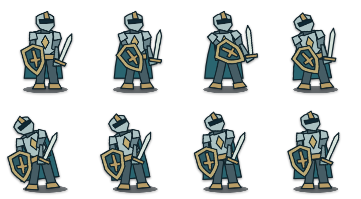

本页独立于正式存档。原生守卫模型沿实际出发装备和记录演示，绘制举盾试作仍供风格比较；配色接近不代表装备、侧向或动作覆盖已经匹配。
下载原生动作GIF · 下载PNG精灵表
查看原绘制试作与格式对照

原生SVG · 1057字节，装备页作为装饰图，不代替名称、属性或实际持有状态。
同图PNG · 5089字节，保留用于小尺寸对照。
 同图PNG · 5089字节，保留用于小尺寸对照。
同图PNG · 5089字节，保留用于小尺寸对照。